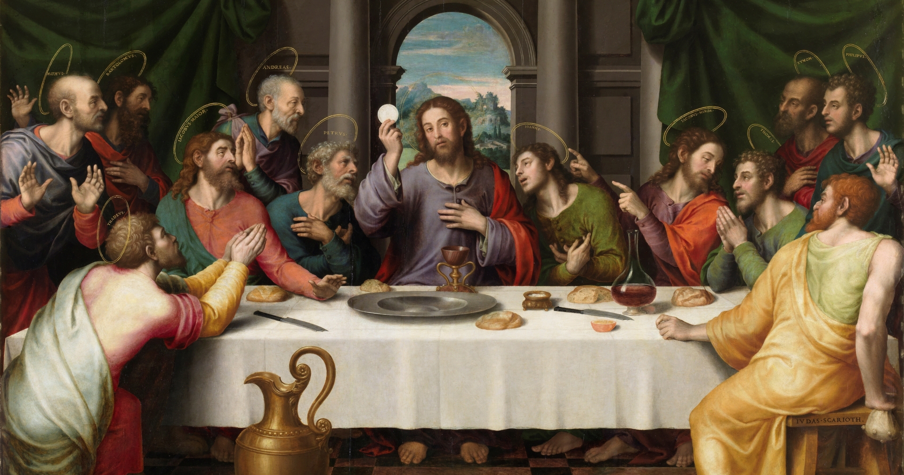

● Web development is a large-scale topic that helps us to improve our technology experience, the most common and popular in developing of website is "html" or hypertext mark-up language from the word itself mark-up language, html is thot a programming language because html is designed to create a website using a specific elements and logic is not must unlike to other programming language such as java, python, etc... For me and experience html is the easiest way to develop a website with a simple content and remarkable elements I can say that anyone have a skill to fit in developing a website. Web Developing using html is a simple, but the challenge will begin in terms in CSS or cascading and JS or java script for the style and design and to the Function of the web. Web developing using html has three (3) main parts, which is html, head and body tags and creating a web was divided in three major parts also, it is HTML, CSS, and JS. Html is focusing in the structure of the website; it is responsible to the content of the website. CSS is responsible to the design, line-up and the beauty of the website, lastly JS. Is the one of the responsible to the functionality of some elements or structure of the website. It also has a side major part that is PHP, it is responsible to the database or it can be a simple JS or a functionality of the website. Web developing will made it us to advance in technology all we need to do is to cherish it and learned it
WHAT IS THE IMPORTANCE OF WEB DEVELOPMENT IN MODERN SOCIETY NOWADAYS?
● With our modern society having knowledge in web development has huge impact in technology. just be practical, if you have knowledge in technology, you can use it as your investment, but we are in technology era, everything that you what to know is in the internet. Even the hardest question in your quiz or exams, internet has it. So, speaking on google or any another famous website, that was html -based you can find anything on internet that how dur technology mas made be- so: what I just said earlier the importance having knowledge on web developing is you can take it as your business or you can share and teach other people who really want to learn about the web developing. they say information technology was in demand to the world, I think is because whole world uses technology and bely on to it. therefore, it really affects the web developing or a has huge impact to the modern society of web development.
social media is the meta of our current era, any one of us has a chance to be famous or anyone has a chance to get known, just show your skills. a person who always use a computer has the most used I websites lastly having knowledge in website is power.
SQL
What is Database?
A database is simply a collection of related infomation.
Phonebook
Shopping List
TODO list
Make-up kit
Databases can be stored in different was.
On paper(notebook)
In your mind
Pouch
On a computer
Database Management System (DBMS)
A special software program that helps users create and maintain a database.
Make it easy to manage large amounts of information
Handles security
Backups
Importing / Exporting Data
Interacts with software application such as Programming Languages
C R U D
CREATE | READ | UPDATE | DELETE
CREATE QUERY
SQL is not case sensitive whether your syntax is in CAPITAL or small letter but if
you are beginner, use CAPITAL letters for your syntax to locate it easily.
But, some syntax of sql are sensitive just like the intialize database name and table
name, remember that the database and table you initialize will turn to small letters if you use
a IDE(MySQL Workbench, PhpMyAdmin, etc.).
CREATE DATABASE is create syntax to create database. .
Use IF NOT EXIST to override the create query if the database name is already existed.
REMINDER: User is not allowed to create a database with a same name to other database.
CREATE TABLE is create syntax to create table.
After declaring the Query and table name, next is initializing the fields of the data Char_ID as
INT or Integer, with AUTO_INCREMENT for automatic data input and lastly PRIMARY KEY to call
the ID as the Unique/Primary Key.
Those syntax we use in ID is default and priotize in creating a table.
If you want to add another field put coma(,) before adding new field.
Char_First_Name as VARCHAR or String Value with 30 characters,
and more...
Use IF NOT EXIST to override the create query if the table name is already existed.
REMINDER: User is not allowed to create a table with a same name to other table.
INSERT QUERY
INSERT INTO is insert syntax to insert data into the table.
After declaring the Query, call the database name and use period(.) and call table name to
bypass, and specifically insert the data into the main database and in the specific table.
Lastly, input VALUES then initialize the data of the table.
REMINDER: Make sure the data is same position to the parameter.
C R U D
CREATE | READ | UPDATE | DELETE
READ QUERY
SELECT is a syntax to read and to show the data of the table.
Using (*) is also known as 'all' the means is you selecting all of the data in the table. Lastly
is calling our table name, it is up to you if you want to add a conditions.
REMINDER: This is a default Select Query
SELECT is a syntax to read and to show the data of the table.
Now, we call an specific fields it is Char_Verse which is responsible for holding the data of
DC and Marvel, then we call our table name, but the twist is we use conditional statement
here, which is the WHERE syntax.
REMINDER: This is a Select Query Where we only want the Output is DC only
REMINDER: This is a same Select Query to DC but we only want the Output was Marvel only
REMINDER: This is Select Query in Data's First name Where the Output we want to show is
is the first name starts with A, W and B.
REMINDER: This is Select Query that will concatinate the two fields in to one new field
using CONCAT then calling the Char_First_Name and Char_Last_Name and the result
will be Char_Full_Name, CONCAT will help you to mix to data and make it new data in
your table.
C R U D
CREATE | READ | UPDATE | DELETE
UPDATE QUERY
UPDATE is a syntax to update or revise the initialize data in table.
After we put Update and bypass the database and table name we need to use the term SET to holds the new value of in Char_First_Name then we will need a Conditional here
WHERE the Char_ID is 2
REMINDER: This is a Update Query the Where conditions only used the ID or the primary
key of the table
C R U D
CREATE | READ | UPDATE | DELETE
DELETE QUERY
DELETE is a syntax to delete an specific data in table.
After we put Delete and bypass the database and table name then we will need to do is
a Conditional statement here WHERE the Char_ID is 2
REMINDER: This is a Delete Query the Where conditions only used the ID or the primary
key of the table
DROP QUERY
DROP is a syntax to drop the data inside in table and also the table.
After we put DROP then classify it as TABLE it will drop the callout table in that database.
REMINDER: This is a Drop Query to drop or delete the table.
REMINDER: Last but not the least, This is a Drop Query to drop or delete the whole database.
WEB DEVELOPMENT
LENTEN
SEASON
Lent is the season of the church year that follows the Epiphany Season. It is a time we set aside each year to remember the love of God that is poured out through Christ Jesus on the cross in His death; and His defeat of death, sin and Satan in Christ’s death and resurrection that brings Eternal Life to you. This season has a penitential character, a solemn nature to it. This is to help us remember to be repentant and remind us of our sin and our mortality.
LENTEN SEASON
PALM
SUNDAY
Palm Sunday commemorates the Christian belief in the triumphal entry of Jesus into Jerusalem, when he was greeted by cheering crowds waving palm branches that they set out on the ground along his path, according to the Bible.
Palm Sunday, in the Christian tradition, the first day of Holy Week and the Sunday before Easter, commemorating Jesus Christ’s triumphal entry into Jerusalem. It is associated in many churches with the blessing and procession of palms (leaves of the date palm or twigs from locally available trees).
LENTEN SEASON
HOLY
MONDAY
As you continue your pilgrimage through Holy Week, Monday is an opportunity to slow down and reflect the humanity of Jesus.
One great way to observe the Monday of Holy Week is to go to Confession. Allow God’s forgiveness to wash over you so that you can let go of any anger or resentment that is lingering in your heart.
You can reflect further on Monday of Holy Week by reading John 2:13-22.
LENTEN SEASON
HOLY
TUESDAY
Tuesday was a busy day for Jesus and the disciples. So much happened on this day, including Jesus calling out the Pharisees, teaching by the fig tree, and preaching extensively on the Mount of Olives.
One great way to observe Tuesday of Holy Week is to deep clear your home. This tradition arises from the Jewish custom of preparing the home for Passover. Often, decluttering our homes is an avenue to decluttering our souls.
You can reflect further on Tuesday of Holy Week by reading Matthew 21:23-27, Matthew 22: 34-40, or Matthew 26:6-13.
LENTEN SEASON
HOLY
WEDNESDAY
Wednesday of Holy Week is often called Spy Wednesday. Why? Because this is the day Judas Iscariot spies on Jesus, secretly plotting to have him arrested.
One common way to observe Spy Wednesday is to eat simple meals, offering the sacrifice as a prayer to Jesus. You can reflect further on Spy Wednesday by reading Matthew 26:14-16.

LENTEN SEASON
MAUNDY
THURSDAY
Holy Thursday is the first day of the Easter Triduum, the most sacred days of the Catholic faith. It begins with the Mass of the Lord’s Supper, commemorating the Last Supper celebrated by Jesus and his disciples on the Jewish holiday of Passover. It’s not a Holy Day of Obligation, but many Catholics attend Mass.
You can reflect further on Holy Thursday by reading Luke 22:14–16; 19-20 and Luke 22:39-46.
LENTEN SEASON
GOOD
FRIDAY
One powerful way to remember Good Friday is by maintaining silence throughout the day, especially between 12 pm and 3 pm (when Jesus was on the Cross).
Good Friday, observed on March 29 this year, is a significant day for Christians worldwide. It commemorates the crucifixion and death of Jesus Christ, preceding Easter Sunday, which celebrates his resurrection. History Of Good Friday: Good Friday marks the day when Jesus was crucified by the Romans in Jerusalem.
LENTEN SEASON
BLACK
SATURDAY
Holy Saturday is a day of preparation for Easter. For some families this might mean praying together, preparing their home for guests, and dying Easter Eggs. Although there is no Mass offered in the morning, many churches host a short prayer service. When night falls, the Church officially begins its first Easter Celebration at the Easter Vigil Mass!
Holy Saturday is a day of quiet reflection and anticipation for Christians around the world. It is the day between the crucifixion of Jesus Christ on Good Friday and his resurrection on Easter Sunday. Holy Saturday, also known as Easter Eve, is a time to mourn the death of Jesus and to prepare for his resurrection.
LENTEN SEASON
EASTER
SUNDAY
The whole world changed on Easter Sunday. It was an earth-shattering, life changing, historic event, and the ultimate proof that Jesus truly is God. Catholics have been celebrating Easter Sunday for over 2,000 years.
The Bible says that Christ died on a cross on a day called Good Friday. Was buried for three days. According to the Bible, Jesus was then resurrected and came back to life on Easter Sunday.
Lenten Season
Pray for his Greatness!
Palm Sunday
commemorating Jesus’ triumphal entry into Jerusalem